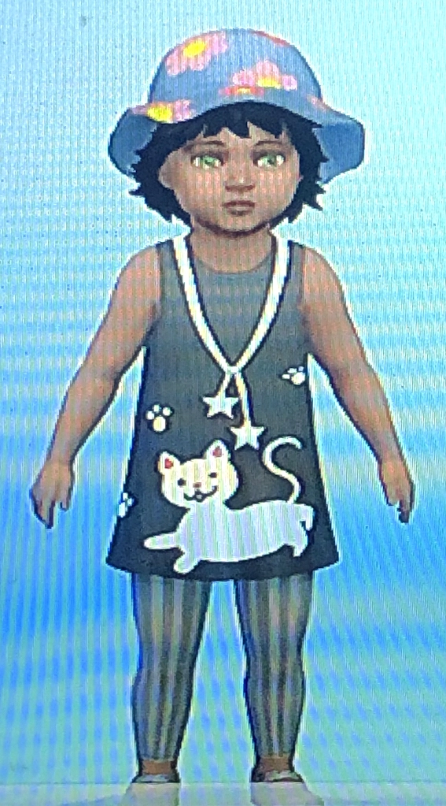
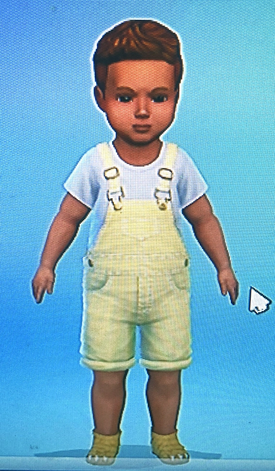

Sim-ply the best
[Kuma]: Barky McBark Face is at Liverpool University's Small Animal Teaching Hospital (opens in a new tab) right now. About to undergo an operation.
He needs it. I followed him down the road when he went for a walk earlier. There's a reason models take to a catwalk...us cats are graceful creatures. Dogs, not so much. And with Jak it's more of a limping waddle.
I'm sure Jak will share the details later. I'm trying not to think about it. Or be worried. It's not good for my image to be concerned about a canine.
Before I curl up for a nap I'll look over some pictures to distract myself.
Did you know that my hoomans have been putting themselves into the thing they call a Pee Ess Floor (I think. I'm sure that's what they call it). They've created little versions of themselves in a very fancy house.
I can't believe they didn't want to create any pets. They didn't think they'd be able to look after them properly. Jak and I were disappointed. We wanted to explore that place where it always seemed to be sunny and warm. I was sure those kids would leave food on the counters in the simulated house.
Next thing we know our electronic counterparts have joined the Sims family, but not as pets. Jak and I are HOOMAN! Apparently little brothers and sisters are easier to look after.
They let me have screenshots. Sorry that they look a bit psychedelic. I have to say, I look good.
I think they've captured Jak's portly essence too.
Poor hooman Jak...
The real Jak is spoilt. Not that I'm bitter about that. But the hooman Jak was taken into care by the Sim authorities because his electronic siblings didn't look after him well enough.
Hooman Kuma is still strutting her stuff...rather like Tina...'Simply the Best'...well, I am...